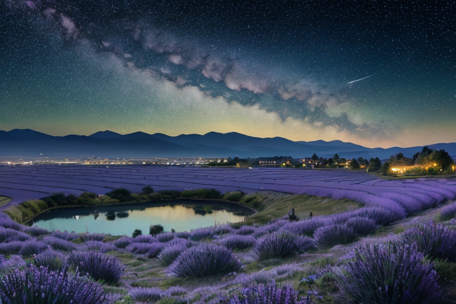
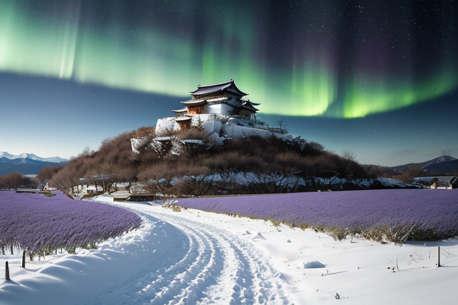
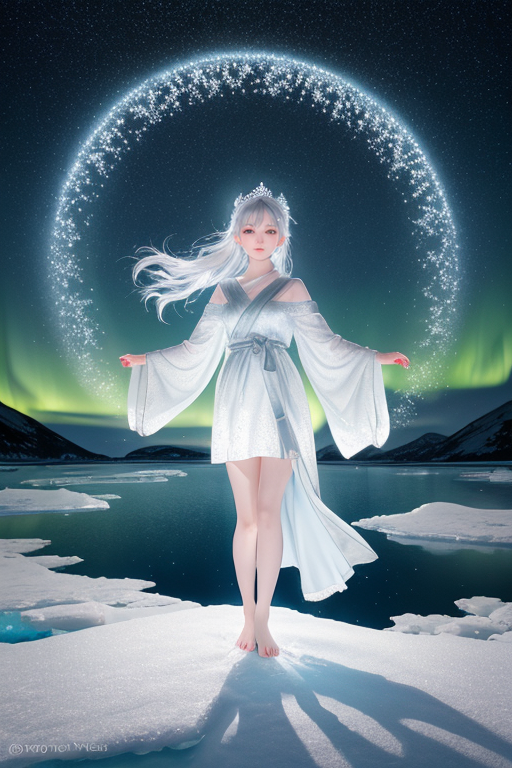
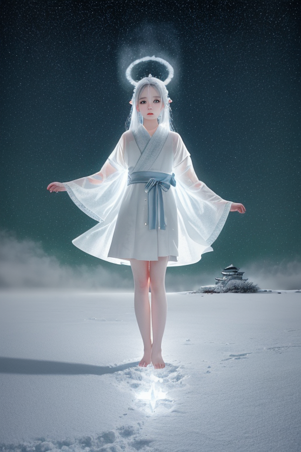

第一章 現実の北海道
あなたはまだ気づいていない。この土地にも、王がいることを。
函館山の山頂は、夜の帳が下りる頃、人々のため息で満ちる。眼下に広がる函館の夜景は、宝石を散りばめたように輝き、観光客のカメラを忙しくさせる。しかし、その美しさの根底には、かつて箱館戦争と呼ばれた戦いの終結、五稜郭に立てこもった旧幕府軍の無念が、この土地の地脈に深く刻まれている。勝利も敗北も、時と共に風化し、今は観光名所として整えられた星形の要塞が、静かな公園として佇む。
ノルディア・エルムは、その五稜郭の土塁の上に立っていた。銀髪は微風に揺れ、アイスブルーの瞳は、遠く摩周湖の方向を見据える。彼の王国は広大だ。ラベンダー畑の紫も、小樽運河の石畳も、雪原の白も、すべてが彼の領域である。この広さは、時に人を孤独にする。開拓者たちが味わった、果てしない原野に向き合う時の、あの圧倒的な孤独感を。王は問う。あなたは、この広さに耐えられるか？ 耐えるしかない、と土地は答える。ジンギスカンの煙も、海鮮市場の活気も、すべてはその広さと孤独との折り合いの中で生まれた営みなのだ。
第二章 歪みの兆候
函館山の夜景は、星屑を散らしたように輝いていた。その美しさの下で、孤広王ノルディア・エルムは微かな地鳴りを感じ取った。五稜郭の戦いから百五十年余り。星形要塞が流した血と決意は、土地の記憶として沈殿し、時折、プレートの圧力と共鳴して揺らぎを生む。
彼は無言で主席妖精フロストリンを見た。氷の精霊はすぐに地中へと潜り、道東の地脈に流れる過剰な圧力を、広大な雪原へと分散させ始めた。歪みは消せない。巨大地震のエネルギーを無に帰すことは、王にもできない。彼にできるのは、ほんのわずかな調整だけだ。揺れの最大加速度を1ガル減じ、破壊的な波の到達を数秒遅らせる。その「わずか」が、人の命の綱になることを、彼は知っていた。
摩周湖の霧のように、歴史の重みはこの土地にまとわりつく。開拓の苦難、戦いの悲哀、そして自然の厳しさ。それらが積み重なり、時に歪みとして現れる。王は問い続ける。この広さと、その中に織り込まれた悲しみに、あなたは耐えられるか。答えはまだ、風雪の中にある。

第三章 王の葛藤
五稜郭の星形の稜堡は、雪に埋もれていた。一八六九年、この地で起きた戦いの記憶は、地脈に深い傷跡を残している。独立を志した者たちの無念。それは、単なる歴史的事実ではなく、今も続く「変革」という歪みの根源だった。
ノルディア・エルムは函館山の頂に立つ。眼下に広がる津軽海峡は鉛色を帯び、変革の波が地の底から押し寄せようとしていた。彼の役割は「調整」だ。激しい変動を緩和し、破局を防ぐこと。しかし、主席妖精フロストリンが伝える地脈の鼓動は、単なる緩和を超えた「切断」を求めていた。この地の独立志という歪みを、根源から断ち切れ、と。
彼は目を閉じた。小樽運河を静かに埋める雪、富良野のラベンダーが枯れる畑、旭山の動物たちが息を潜める姿が瞼の裏を過る。変革を止めることは、この土地の可能性をも凍てつかせることか。広大なこの地は、時に痛みを伴う選択を自ら求めもする。
「……耐えよ」
彼は囁いた。無言の従者フロストリンとオーロリアに、微かな意志を伝える。変革の波を止めはしない。その衝撃を、この広さそのものが吸収できるよう、分散させ、遅延させる。王は、歴史の審判者ではなく、その重みを共に担う者でいると決めた。

第四章 妖精との対話
摩周湖の霧が、深い藍色の水面を覆い隠していた。訪れる者を拒むかのようなその静寂の中で、孤広王ノルディア・エルムは、二人の従者と向き合っていた。
「分散は可能です」
フロストリンが、冷たい石のような声で言った。彼の手には、地脈図が氷の結晶のように浮かんでいる。五稜郭に集まる熱量、蝦夷地を覆う変革の波。それを道内へと広げ、一点の破壊を面の負担に変える術を示していた。
「しかし、広がる痛みは、消えません」
オーロリアの周りで、極光が微かに揺らめいた。
「寒さは、孤独は、増幅します。分散は、救済の延期に過ぎず……」
彼女の声は、風の囁きのようだった。
王は頷いた。広さに耐えるとは、痛みを一点に集中させず、この大地と分かち合うこと。それは優しさであり、同時に残酷でもある。彼は自問した。この選択が、結果としてより多くの者を長い冬に晒すことにならないか、と。
「……実行せよ」
彼の決断は、霧の中に静かに消えた。

第五章 微調整と余韻
函館山の麓、五稜郭の星形が朝靄に浮かぶ。一八六九年五月、新政府軍の包囲は最終局面を迎えていた。旧幕府軍の兵士たちは、寒さと絶望で心が凍りつきかけていた。その時、孤広王は決断した。歴史の流れを一度だけ、ほんの少し曲げることに。
彼は広大な雪原に立ち、両手を大地へと押し当てた。フロストリンが地脈の圧力を全身で受け止め、オーロリアが極光のカーテンを張り巡らせた。王が行ったのは、吹雪の強さの微調整ではない。兵士たちの心に灯る、ほんの一瞬の「諦め」のタイミングを、ほんの数秒だけ遅らせることだった。その僅かな隙間に、指揮官の一声が届く。ほんの数名が、別の退路を思い出す。歴史の大勢は変わらない。だが、運命の分岐点で失われる命の数が、ほんの少しだけ減る。
代償は大きかった。王の身体を構成する星の光が、一部永久に失われた。彼はこれ以上、大規模な調整はできない。広さに耐えるとは、全てを救えぬという事実と、それでも微力を尽くすという覚悟の間で、静かに佇み続けることだ。
摩周湖の霧のように、彼の働きは記録に残らない。ただ、救われた命の余韻が、この広い大地のどこかで、かすかに脈打っている。
あなたの町にも、王がいる。